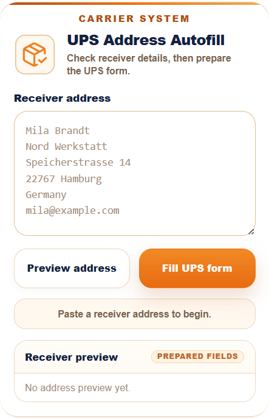
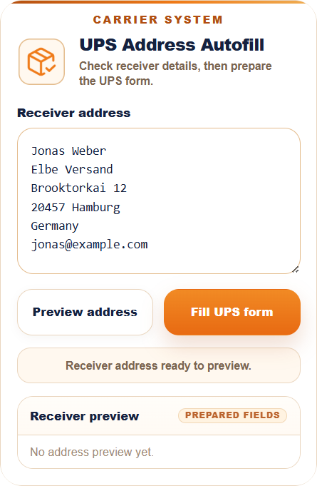
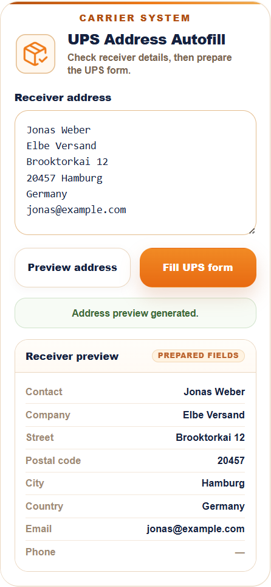

✦
Ready state
Start with a carrier-specific receiver view.
The popup opens with a sample receiver block, an empty preview, and two direct actions: preview the details first or prepare the UPS form later.
A carrier-system workflow that turns pasted receiver details into prepared UPS shipping fields, so repeated address entry stays reviewable before anything changes.
Receiver contact and address details had to be copied from text into UPS shipping fields by hand.
The extension parses the pasted receiver block and prepares matching contact, address, and email values.
The user can check the prepared receiver data before using it in the UPS form.

The popup opens with a sample receiver block, an empty preview, and two direct actions: preview the details first or prepare the UPS form later.

The contact, company, address, country, and email stay visible before anything is inserted into the carrier page. The workflow stays controlled instead of immediately changing page fields.

The address is separated into contact, company, street, postal code, city, country, and email. Optional fields stay visible when they are empty, so missing data is not hidden.
Contact data included. The UPS workflow keeps receiver email visible in the preview because the carrier page can require it during shipment preparation.
Review first. The prepared result stays visible before the final fill action, so the user can catch missing or unusual receiver data.
Public sample data. Visible names, addresses, email addresses, and form values are examples for demonstration.
Client details stay private. Account access, internal rules, and real shipment data are not included.
Independent workflow. UPS is referenced only as the carrier website this workflow was built around. This project is independent and not affiliated with UPS.